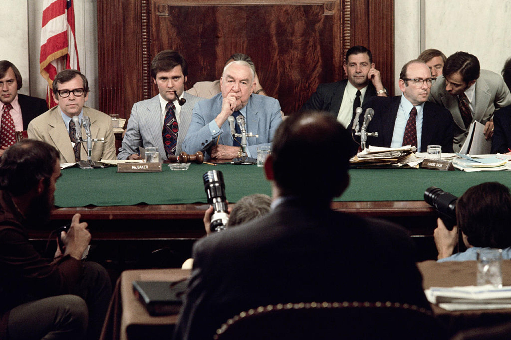
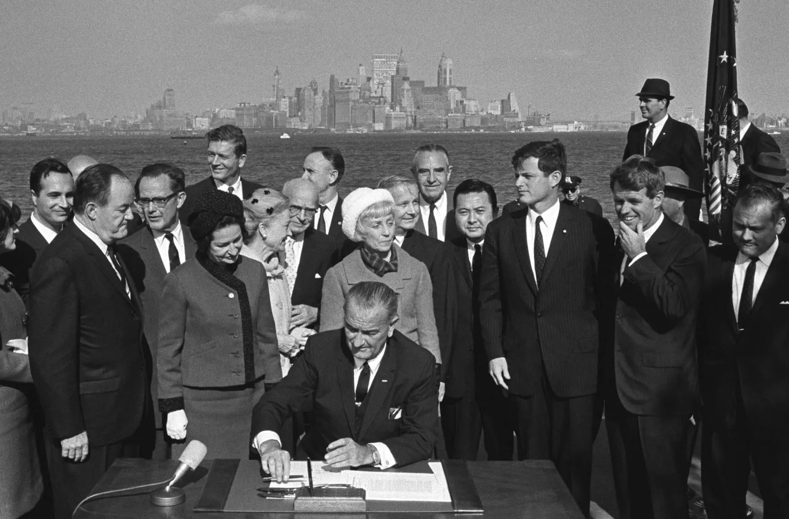
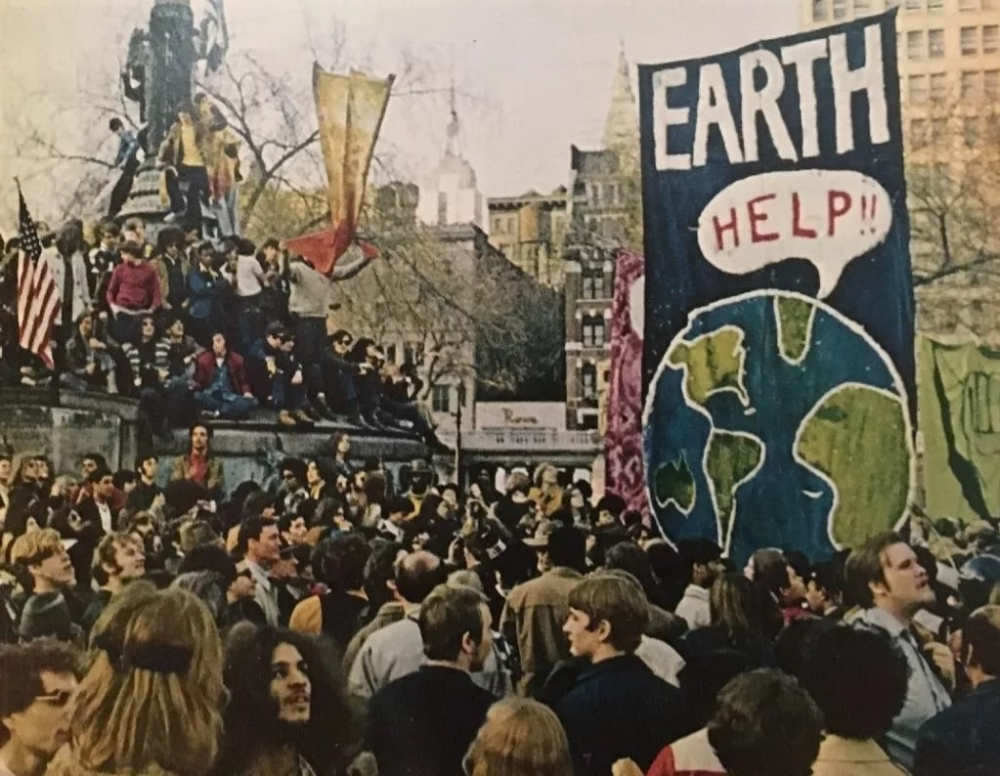
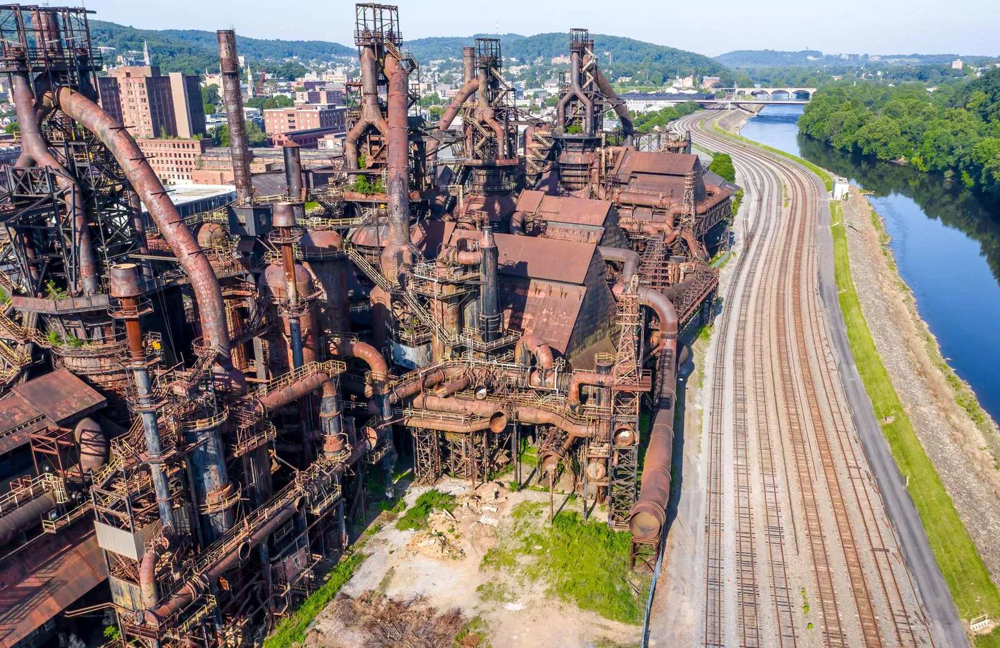
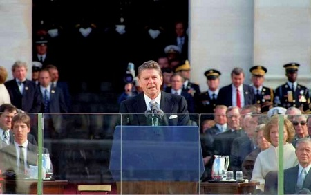
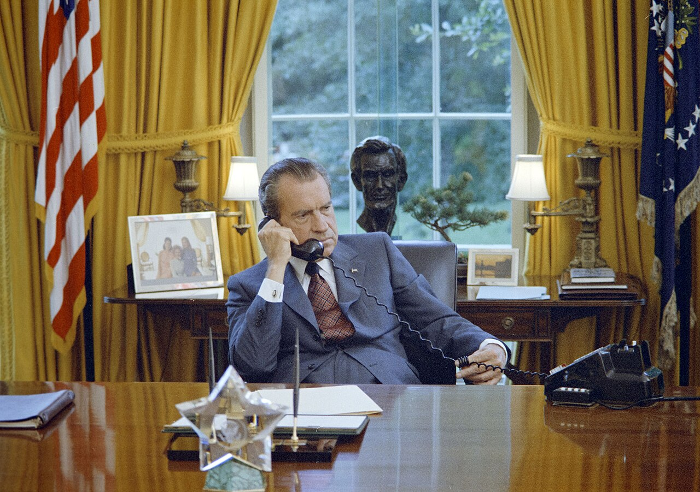

On the night of June 17, 1972, five men in business suits and surgical gloves were arrested inside the Democratic National Committee headquarters at the Watergate hotel complex in Washington DC. They were carrying bugging equipment, cash, and address books linked to the Committee to Re-Elect the President. What followed over the next two years — the coverup, the Senate hearings, the Saturday Night Massacre, the secret tape recordings, and finally the resignation of President Richard Nixon — was a constitutional crisis unlike anything the country had experienced since the Civil War. But Watergate was only one of many ways that the 1960s, 1970s, and 1980s reshaped the country Americans thought they knew. The America that emerged from those decades looked different, believed different things, and was still arguing about all of it.
On the night of June 17, 1972, five men in business suits were arrested inside the Democratic National Committee headquarters at the Watergate hotel in Washington DC. They were carrying bugging equipment and address books linked to the president's re-election campaign. What followed over the next two years — the cover-up, the Senate hearings, the secret tape recordings, and finally the resignation of President Nixon — was the worst constitutional crisis since the Civil War. But Watergate was just one of many ways the 1960s, 1970s, and 1980s changed the country. The America that came out the other side looked different — and was still fighting about all of it.
CHAPTER ONE
WATERGATE AND THE LIMITS OF POWER

The Senate Watergate Committee hearings, 1973 — broadcast live on national television. Millions of Americans watched a president's aides testify about crimes committed by his administration. Wikimedia Commons.
WatergateThe 1972-1974 political scandal in which President Nixon's campaign broke into Democratic Party offices and Nixon's administration covered it up — leading to Nixon's resignation. did not begin as a constitutional crisis. It began as a third-rate burglary — a clumsy attempt to bug the phones and photograph documents at the Democratic National Committee. What turned it into a constitutional crisisA situation where the government is so divided or the rules are so violated that the normal functioning of government is threatened. was the cover-up. Nixon used the CIA, the FBI, and his own staff to obstruct the investigation, paid hush money to the burglars, and fired the special prosecutor — Archibald Cox — when Cox demanded the secret White House tape recordings in what became known as the Saturday Night Massacre. When the tapes were finally released, they confirmed Nixon had ordered the cover-up within days of the break-in. He resigned on August 9, 1974 — the only president in American history to do so.
Watergate started as a clumsy burglary. What turned it into a constitutional crisis was the cover-up. Nixon used the CIA, the FBI, and his own staff to block the investigation. He paid hush money to the burglars. When special prosecutor Archibald Cox demanded the secret White House tape recordings, Nixon fired him — an event called the Saturday Night Massacre. When the tapes were finally released, they proved Nixon had ordered the cover-up within days of the break-in. He resigned on August 9, 1974 — the only president in American history to do so.
What Watergate revealed about presidential power was not that a president had committed crimes — presidents had done that before. What it revealed was how much power the executive branch had quietly accumulated since Franklin Roosevelt's New Deal and how few structural limits remained on a president willing to abuse it. The aftermath produced the War Powers Act of 1973, the Foreign Intelligence Surveillance Act, and significant reforms to campaign finance law. It also produced a generation-long collapse in public trust in government. Polls measuring trust in the federal government fell from about 75 percent in 1958 to under 30 percent by 1980 — and never fully recovered.
Watergate revealed how much power the executive branch had quietly accumulated — and how few limits remained on a president willing to abuse it. The aftermath produced new laws restricting presidential war powers and surveillance. It also produced a lasting collapse in public trust in government. About 75 percent of Americans trusted the federal government in 1958. By 1980, that number was under 30 percent — and it never fully recovered.
DID YOU KNOW
The Watergate break-in was so unnecessary that it has puzzled historians for fifty years. Nixon was going to win the 1972 election in a landslide no matter what — he carried 49 of 50 states. The Democratic Party's internal documents contained nothing that could have helped him. The burglars were not even skilled operatives: one was carrying his own business card when arrested. Nixon's aides have never fully explained what they were actually looking for. The scandal that ended a presidency started as a crime that served no purpose.
CHAPTER TWO
AMERICA TRANSFORMS

LBJ signs the Immigration and Nationality Act of 1965 at the Statue of Liberty. Almost no one predicted how dramatically it would transform America's ethnic composition over the next fifty years. Wikimedia Commons.

The first Earth Day rally, April 22, 1970. An estimated 20 million Americans participated. The environmental movement it helped launch produced the EPA, the Clean Air Act, and the Clean Water Act within two years. Wikimedia Commons.
The Immigration Act of 1965 is one of the most consequential laws in American history — and almost no one who voted for it predicted what it would do. The old immigration system had favored Western European countries. The new law replaced national origin quotas with a preference for family reunification and needed skills. The sponsors of the bill expected modest increases from Southern and Eastern Europe. What actually happened was a massive wave of immigration from Asia, Latin America, and Africa. By 2015, the foreign-born population of the United States had grown from 5 percent to nearly 14 percent — and the country's racial and ethnic composition had been transformed. The demographic shiftA major change in the racial, ethnic, or age composition of a population over time. that is reshaping American politics today was largely set in motion by a law passed in 1965.
The Immigration Act of 1965 is one of the most consequential laws in American history — and almost no one predicted what it would do. The old immigration system favored Western Europe. The new law prioritized family reunification and skilled workers instead. Supporters expected modest changes. What actually happened was massive immigration from Asia, Latin America, and Africa. By 2015, the foreign-born population had grown from 5 percent to nearly 14 percent of the United States. The dramatic changes in America's racial and ethnic composition that are reshaping politics today were largely set in motion by that 1965 law.
The environmental movement produced a parallel transformation in the role of government. Rachel Carson's 1962 book "Silent Spring" documented how pesticides — particularly DDT — were contaminating the food chain and killing birds, fish, and wildlife across America. The book sold half a million copies in six months and directly launched the modern environmental movement. By 1970, the EPAEnvironmental Protection Agency — a federal agency created in 1970 to enforce environmental laws and protect air, water, and land from pollution. had been established, Earth Day had drawn 20 million participants, and Congress had passed the Clean Air Act. The Clean Water Act followed in 1972. For the first time, the federal government accepted responsibility for the quality of the air Americans breathed and the water they drank — a responsibility that private markets had consistently failed to provide.
The environmental movement transformed what government did. Rachel Carson's 1962 book "Silent Spring" documented how pesticides were poisoning the food chain and killing wildlife. It sold half a million copies in six months and launched the modern environmental movement. By 1970, the EPA had been created, Earth Day had drawn 20 million participants, and Congress had passed the Clean Air Act. The Clean Water Act followed in 1972. For the first time, the federal government accepted responsibility for the quality of the air and water Americans depended on — something private markets had consistently failed to protect.
FAST FACTS
AMERICA CHANGING, 1965–1990
20MAmericans who participated in the first Earth Day, April 22, 1970 — one of the largest civic demonstrations in American history
30%of Americans who trusted the federal government by 1980 — down from 75% in 1958, largely because of Vietnam and Watergate
500%increase in the incarceration rate between 1970 and 2000 — driven primarily by the War on Drugs and mandatory minimum sentencing laws
1965the year both the Immigration Act and Medicare and Medicaid were signed into law — a single legislative year that permanently changed who was American and who the government protected
CHAPTER THREE
CRACKS IN THE CITIES

An abandoned factory in a Rust Belt city — as manufacturing jobs moved to lower-wage regions and countries, Midwest industrial cities like Detroit, Cleveland, and Pittsburgh lost hundreds of thousands of residents between 1960 and 1990. Wikimedia Commons.
DeindustrializationThe decline of manufacturing jobs in a region as factories close or move to areas with lower wages, leaving behind unemployment and urban poverty. hollowed out the cities of the industrial Midwest and Northeast. Detroit, Cleveland, Pittsburgh, Buffalo, and dozens of other cities lost manufacturing plants to the South, to Mexico, and to Asia through the 1970s and 1980s. Steel mills, auto plants, rubber factories, and meatpacking houses closed. The workers they had employed — disproportionately Black workers who had migrated North in the Great Migration for exactly those factory jobs — were left in cities whose tax base, schools, and services were collapsing along with their economies. The Frostbelt-to-Sunbelt migration pulled middle-class white residents and tax revenue toward Phoenix, Houston, Las Vegas, and Atlanta. The cities left behind faced a compounding crisis that their remaining residents experienced as abandonment.
Deindustrialization gutted American industrial cities. Detroit, Cleveland, Pittsburgh, and dozens of other cities lost factories to the South, Mexico, and Asia through the 1970s and 1980s. The workers left behind — disproportionately Black workers who had come North in the Great Migration for exactly those manufacturing jobs — were in cities whose tax bases, schools, and services were collapsing. Meanwhile, middle-class white residents moved to Sun Belt cities like Phoenix, Houston, and Atlanta. The cities left behind faced a crisis their residents experienced as abandonment by everyone who could afford to leave.
Into this collapse came crack cocaine. Beginning in the mid-1980s, crack — a cheap, smokable form of cocaine — spread rapidly through economically devastated urban communities. The War on DrugsA set of government policies beginning in the 1970s and intensifying in the 1980s that used law enforcement and prosecution — rather than treatment and prevention — as the primary response to drug use. responded with mandatory minimum sentences that sent crack users to prison for terms far longer than powder cocaine users faced — even though the two drugs were pharmacologically identical. The disparity was not accidental: crack was primarily used in Black communities; powder cocaine in white ones. The result was a 500 percent increase in incarceration rates between 1970 and 2000 that fell most heavily on Black men and devastated the communities that were already suffering most. The War on Drugs did not end the drug problem. It added mass incarceration to it.
Into economically devastated cities came crack cocaine in the mid-1980s. Crack — a cheap, smokable form of cocaine — spread rapidly through communities that had already lost their economic foundations. The War on Drugs responded with mandatory prison sentences that sent crack users to prison for much longer terms than powder cocaine users faced — even though the two drugs were essentially the same. Crack was primarily used in Black communities; powder cocaine in white ones. The result was a 500 percent increase in incarceration rates between 1970 and 2000 that fell most heavily on Black men and communities already struggling with deindustrialization. The War on Drugs did not solve the drug crisis. It added mass incarceration to it.
ART SPOTLIGHT
Untitled (work from the early 1980s) — Jean-Michel Basquiat, circa 1981–1983
Basquiat emerged from the New York City graffiti scene in the late 1970s as the city was experiencing fiscal collapse, deindustrialization, and the beginning of the crack epidemic. His paintings — combining graffiti, text, and raw expressionist imagery — documented what official America was not looking at.
Basquiat sold his first significant painting for $200 in 1980. By 1982, he was represented by one of the most prominent galleries in New York and selling work for hundreds of thousands of dollars. He died of a heroin overdose in 1988 at age 27 — the same year a painting he had made at 21 sold for $110 million at auction in 2017, making it one of the most valuable paintings ever sold by an American artist. He grew up in Brooklyn, the son of a Haitian father and a Puerto Rican mother, and made art about race, power, and what the American Dream looked like from the streets of New York City in the decade that America's cities were collapsing.
CHAPTER FOUR
REAGAN REDEFINES AMERICA

Ronald Reagan at his inauguration, January 20, 1981. His presidency redefined the relationship between government and citizens that FDR's New Deal had established nearly fifty years earlier. Wikimedia Commons.
Ronald Reagan won the presidency in 1980 on a platform that explicitly challenged the fifty-year consensus that had governed American politics since the New Deal. He cut income taxes dramatically — the top marginal rate fell from 70 percent to 28 percent — and rebuilt the military budget. He argued that government was the problem, not the solution, and that cutting taxes and reducing regulation would produce economic growth that would benefit everyone through what critics called "trickle-down economics." The economy did eventually grow, but the growth was unevenly distributed: the incomes of the wealthiest Americans rose dramatically while wages for middle and lower-income workers stagnated. Inequality, which had been declining since the New Deal, began rising again in the 1980s and has continued rising since.
Ronald Reagan won the presidency in 1980 by directly challenging the New Deal consensus that had governed America for fifty years. He cut income taxes dramatically — the top rate fell from 70 percent to 28 percent — and rebuilt the military. He argued that reducing government and cutting taxes would grow the economy and benefit everyone through what critics called "trickle-down economics." The economy did grow. But the growth was unequal: wealthy Americans' incomes rose sharply while wages for middle and lower-income workers stagnated. Inequality had been declining since the New Deal. Under Reagan, it started rising again — and has kept rising since.
The Reagan RevolutionThe political movement led by Ronald Reagan in the 1980s that shifted American politics toward lower taxes, reduced government programs, deregulation, and a more assertive foreign policy. also reshaped who the Republican Party represented. Before Reagan, both parties had significant wings that accepted the basic framework of the New Deal. After Reagan, the Republican Party became consistently opposed to the welfare state, labor unions, and federal regulation. The Democratic Party became the consistent defender of those institutions. The political polarization that now defines American politics — the total collapse of bipartisan agreement on almost any major policy question — has its roots in the Reagan era, when the two parties sorted themselves into genuinely different visions of what government was for.
The Reagan Revolution also reshaped American political parties. Before Reagan, both parties had significant members who accepted the basic framework of the New Deal. After Reagan, Republicans consistently opposed the welfare state, unions, and federal regulation. Democrats consistently defended them. The political polarization that defines American politics today — with the two parties unable to agree on almost anything — has its roots in the Reagan era, when the parties sorted themselves into two genuinely different visions of what government should do.
Real-world connection: The debates students hear today about immigration, environmental policy, income inequality, drug policy, and the size of government all have direct roots in decisions made between 1965 and 1992. Most of the "unfinished business" in American politics was defined in those decades.
Real-world connection: Almost every major political debate students hear today — about immigration, the environment, inequality, drug policy, and government's role — has direct roots in decisions made between 1965 and 1992. The "unfinished business" was defined then.
PRIMARY SOURCE MOMENT

President Nixon during the Watergate period, 1973–74. Wikimedia Commons.
"I have always tried to do what was best for the Nation. Throughout the long and difficult period of Watergate, I have felt it was my duty to persevere, to make every possible effort to complete the term of office to which you elected me. In the past few days, however, it has become evident to me that I no longer have a strong enough political base in the Congress to continue that effort... Therefore, I shall resign the Presidency effective at noon tomorrow."
— Richard Nixon, resignation address to the nation, August 8, 1974
WHY THIS MATTERS: Nixon framed his resignation as an act of duty to the nation — not as an admission of guilt. He never used the word "wrong" or "illegal" in his resignation speech. Notice what he says his reason for resigning is: he no longer has enough political support in Congress to continue, not that he committed crimes. The House Judiciary Committee had already approved three articles of impeachment. As you read this, consider: what does it mean that a president can be forced from office by the constitutional system — and what does it mean that the person leaving still would not admit wrongdoing?
THEN AND NOW
THE PROBLEMS AMERICA COULDN'T SOLVE IN THE 1970s AND 80s — INEQUALITY, DRUGS, IMMIGRATION, DISTRUST OF GOVERNMENT — ARE STILL UNRESOLVED TODAY.
1974
Nixon departs the White House, August 9, 1974 — the first and only presidential resignation in American history. Wikimedia Commons.
NOW
People at the U.S. Capitol, present day — the institution Watergate tested and the democratic system that ultimately forced a president to resign. CC license.
THEN
In 1974, the constitutional system worked: congressional investigation, public scrutiny of evidence, and the loss of political support forced a president who had committed serious crimes from office. Gerald Ford, who replaced Nixon, said "our long national nightmare is over." But what Watergate left behind was not resolution — it was permanent suspicion. Trust in government, already damaged by Vietnam, never returned to pre-Watergate levels.
NOW
Today, political polarization, income inequality, immigration policy, drug policy, and distrust of government are all still active and largely unresolved issues in American politics. The specific problems are different — the drugs are different, the immigrants come from different places, the inequality is more extreme — but the underlying arguments are recognizably the same ones that were unresolved in 1992 when this era ended.
CONNECTION
The "unfinished business" in the lesson title is not accidental. The environmental protections, immigration reforms, drug policies, and government trust issues of this era were not solved — they were inherited by the decades that followed, where they remain contested and incomplete. History matters for solving these problems because understanding how they were created, who benefited from them, and what solutions were tried and failed is the only realistic starting point for doing better.
Nixon resigned before he could be impeached. The constitutional system worked — barely, and with enormous damage to public trust. Do you think the system was strong enough, or did Watergate reveal serious weaknesses that still haven't been fixed?